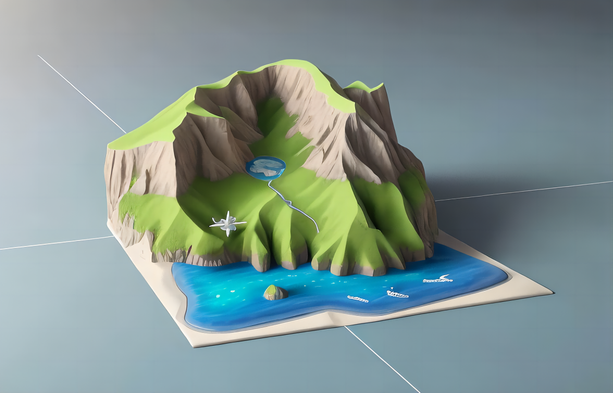
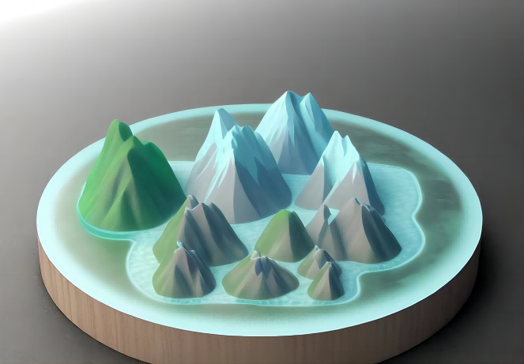
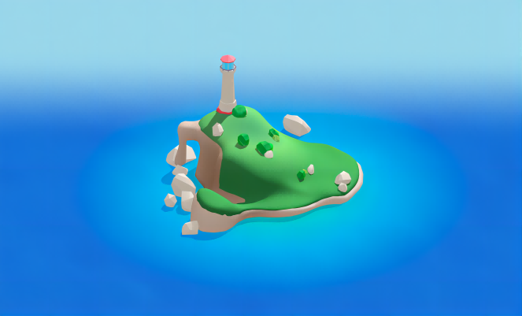
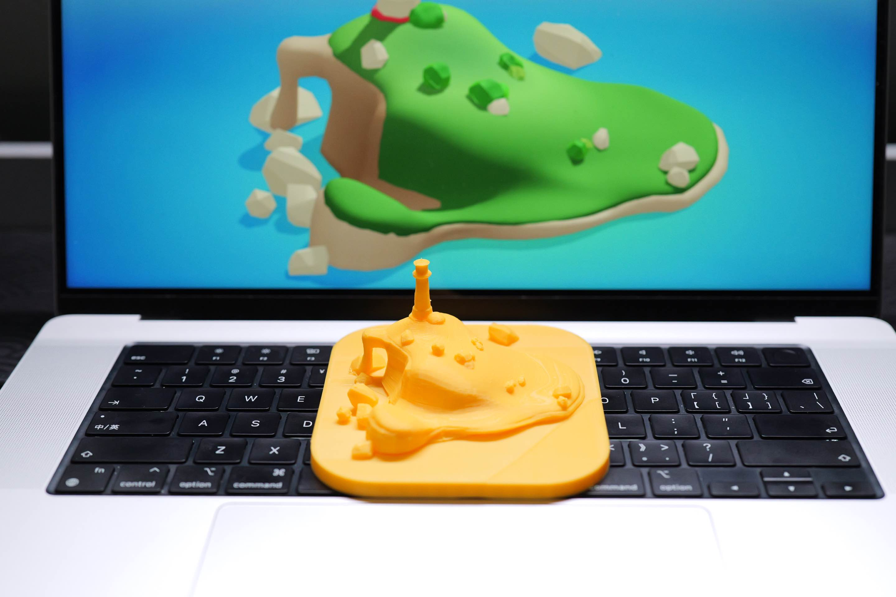
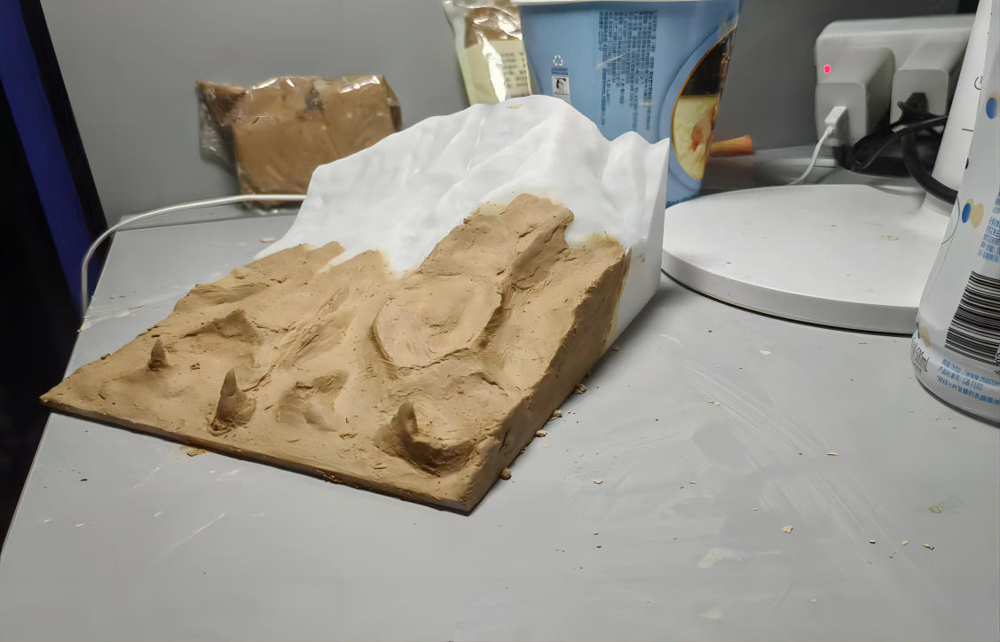
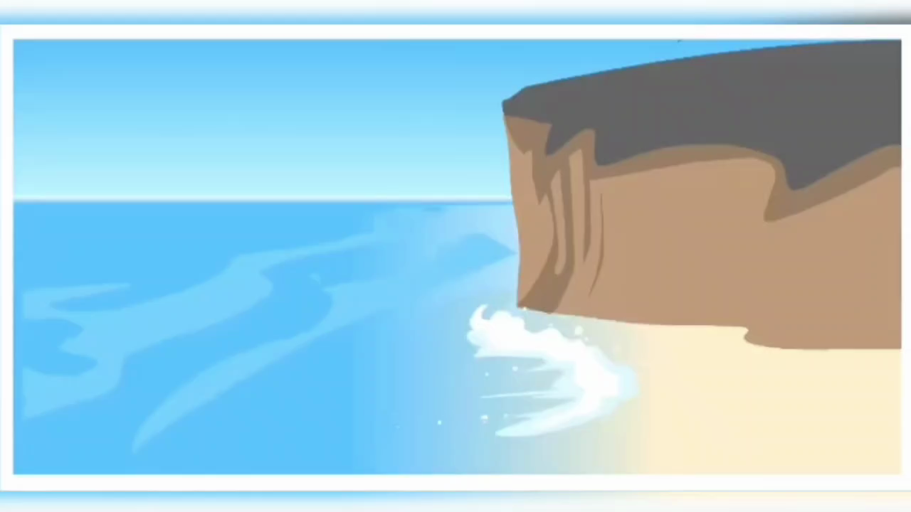

首页
关于
论坛
我们
<
>
产品系列

浅水岛屿
海风轻拂，蓝天白云映照着那片浩渺无垠的海洋。在这片广袤的水域中，孤立而独特的岛屿傲然屹立。它们就像大自然的珍宝，被蓝色的海水环抱，彷佛是大海恩赐给人类的礼物。

群山之巅
高耸入云的群山，仿佛是大地与天空之间的壮丽桥梁。它们雄伟而峻峭，山脉起伏如巨龙蜿蜒，将大地分割成一片片神秘而壮丽的景色。

灯塔岛屿
那如画的地方，迷人的景色常让人心醉。当黄昏染红天际，最后一缕余晖洒在岛上，将其笼罩在温暖的光芒中。夜晚降临时，岛上的灯塔开始闪烁，犹如明珠般璀璨夺目，远远地就可以看到它散发出的柔和光线。这束光芒穿越黑暗的海洋，宛如一道生命的纽带，将孤寂的航行者与大地紧密相连。
产品原型

模型A
这是一个用3D打印技术制作的山体模型。模型呈现出一座山峦的形状，虽然简单，但能够大致展示山脉的起伏和轮廓。虽然模型的细节有限，但它仍然能够给人一种山脉的感觉，让人联想到大自然中壮丽的山景。

模型B
这是一个通过3D打印技术制作的山体模型。模型展现出了绵延起伏的山脉，山峰间峡谷纵横，形成壮丽的景观。清晰的岩石纹理和山势流畅的曲线表现出不同海拔高度的变化。触摸模型的表面，你能感受到仿佛能够触摸到山石的质感，仿佛置身于真实的山脉之中。
更多
